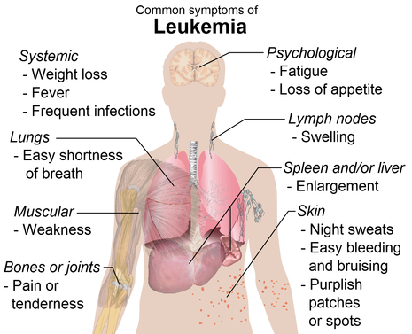

Leukemia
Leukemia (also spelled leukaemia; pronounced /luːˈkiːmiːə/[1] loo-KEE-mee-ə) is a group of blood cancers that usually begin in the bone marrow and produce high numbers of abnormal blood cells.[9] These blood cells are not fully developed and are called blasts or leukemia cells.[2] Symptoms may include bleeding and bruising, bone pain, fatigue, fever, and an increased risk of infections.[2] These symptoms occur due to a lack of normal blood cells.[2] Diagnosis is typically made by blood tests or bone marrow biopsy.[2] The exact cause of leukemia is unknown.[5] A combination of genetic factors and environmental (non-inherited) factors are believed to play a role.[5] Risk factors include smoking, ionizing radiation, petrochemicals (such as benzene), prior chemotherapy, and Down syndrome.[5][3] People with a family history of leukemia are also at higher risk.[3] There are four main types of leukemia—acute lymphoblastic leukemia (ALL), acute myeloid leukemia (AML), chronic lymphocytic leukemia (CLL) and chronic myeloid leukemia (CML)—and a number of less common types.[3][10] Leukemias and lymphomas both belong to a broader group of tumors that affect the blood, bone marrow, and lymphoid system, known as tumors of the hematopoietic and lymphoid tissues.
Treatment may involve some combination of chemotherapy, radiation therapy, targeted therapy, and bone marrow transplant, with supportive and palliative care provided as needed.[3][6] Certain types of leukemia may be managed with watchful waiting.[3] The success of treatment depends on the type of leukemia and the age of the person. Outcomes have improved in the developed world.[10] Five-year survival rate was 67% in the United States in the period from 2014 to 2020.[4] In children under 15 in first-world countries, the five-year survival rate is greater than 60% or even 90%, depending on the type of leukemia.[13] In children who are cancer-free five years after diagnosis of acute leukemia, the cancer is unlikely to return.[13] In 2015, leukemia was present in 2.3 million people worldwide and caused 353,500 deaths.[7][8] In 2012, it had newly developed in 352,000 people.[10] It is the most common type of cancer in children, with three-quarters of leukemia cases in children being the acute lymphoblastic type.[3] However, over 90% of all leukemias are diagnosed in adults, CLL and AML being most common.[3][14] It occurs more commonly in the developed world.
Signs and symptoms
The most common symptoms in children are easy bruising, pale skin, fever, and an enlarged spleen or liver.[35] Damage to the bone marrow, by way of displacing the normal bone marrow cells with higher numbers of immature white blood cells, results in a lack of blood platelets, which are important in the blood clotting process. This means people with leukemia may easily become bruised, bleed excessively, or develop pinprick bleeds (petechiae).[36] White blood cells, which are involved in fighting pathogens, may be suppressed or dysfunctional. This could cause the person's immune system to be unable to fight off a simple infection or to start attacking other body cells. Because leukemia prevents the immune system from working normally, some people experience frequent infection, ranging from infected tonsils, sores in the mouth, or diarrhea to life-threatening pneumonia or opportunistic infections.[37] Finally, the red blood cell deficiency leads to anemia, which may cause dyspnea and pallor.
Some people experience other symptoms, such as fevers, chills, night sweats, weakness in the limbs, feeling fatigued and other common flu-like symptoms. Some people experience nausea or a feeling of fullness due to an enlarged liver and spleen; this can result in unintentional weight loss. Blasts affected by the disease may come together and become swollen in the liver or in the lymph nodes causing pain and leading to nausea.[39] If the leukemic cells invade the central nervous system, then neurological symptoms (notably headaches) can occur. Uncommon neurological symptoms like migraines, seizures, or coma can occur as a result of brain stem pressure. All symptoms associated with leukemia can be attributed to other diseases. Consequently, leukemia is always diagnosed through medical tests. The word leukemia, which means 'white blood', is derived from the characteristic high white blood cell count that presents in most affected people before treatment. The high number of white blood cells is apparent when a blood sample is viewed under a microscope, with the extra white blood cells frequently being immature or dysfunctional. The excessive number of cells can also interfere with the level of other cells, causing further harmful imbalance in the blood count.[40] Some people diagnosed with leukemia do not have high white blood cell counts visible during a regular blood count. This less-common condition is called aleukemia. The bone marrow still contains cancerous white blood cells that disrupt the normal production of blood cells, but they remain in the marrow instead of entering the bloodstream, where they would be visible in a blood test. For a person with aleukemia, the white blood cell counts in the bloodstream can be normal or low. Aleukemia can occur in any of the four major types of leukemia, and is particularly common in hairy cell leukemia.[41].